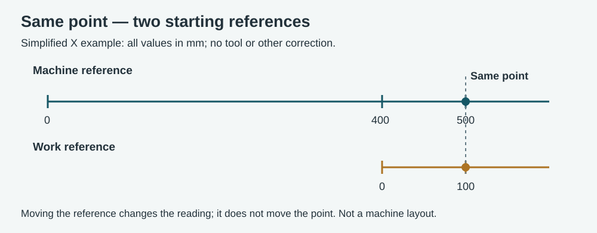

RADONIX · ROUTERXYZAC+RTCP · CHAPTER 5
Operator Manual · English · 8 October 2026
Coordinates, Units and Position Displays
Expanded draft for review. All numerical examples are for explanation. They are not movement instructions or approved settings for the installed machine.
5.1 Give every position number a meaning
A position number is like an address: it becomes useful only when you know the system it belongs to. “Twenty” is not a complete instruction. Twenty along which direction, measured from where, and in which unit? Those questions are the foundation of reading coordinates correctly.
A coordinate is a number that locates a point along a named direction relative to a reference. A set of coordinates gives a more complete location. For this router, the usual three directions are X, Y and Z. A coordinate system is the agreed combination of directions, origin and units used to describe locations.
You already use references in ordinary life. A distance from a doorway differs from a distance from the opposite wall, even when both describe the same chair. Moving the measuring tape's starting point changes the number without moving the chair. Machine and work coordinates use this same idea.
| Question | Example | Why it matters |
|---|---|---|
| Which axis? | X, Y or Z. | The same number on another axis describes a different direction. |
| Measured from where? | Machine reference or work origin. | Different origins give different coordinates for the same point. |
| Which unit? | Millimetres or inches in the job information. | A matching numeral does not establish a matching physical length. |
| What kind of value? | Current position, destination, reference or distance. | A destination is not automatically a distance to move. |
The main window places several kinds of numbers close together. Machine position and Work position are readouts. Reference(mm) contains setup values. Position(mm) beside Goto contains a destination. Step(mm) contains a distance. Read the caption before reading the value; do not copy a number between fields merely because they look similar.
This chapter explains these relationships without requiring you to write a machining program. Later chapters describe the procedures for homing and setting a work origin. Read the examples as explanations; do not enter their values into the machine to see what happens.
5.2 Understand axes, positive directions and negative positions
An axis is a controlled direction of movement. The X and Y coordinates normally describe the two directions across the working plane, while Z describes the height direction of this router arrangement. Learn the actual positive directions from the approved diagram and practical instruction for the installed machine.
A positive direction is the direction in which that coordinate increases. A negative direction is the direction in which it decreases. Positive does not mean “safe,” and negative does not mean “fault.” The plus or minus sign describes direction or location within a coordinate system.
| Change in coordinate | Direction of coordinate change | Distance between the values |
|---|---|---|
| 20 mm to 30 mm | Positive: the number increases. | 10 mm. |
| 20 mm to 10 mm | Negative: the number decreases. | 10 mm. |
| −20 mm to −10 mm | Positive: the number becomes less negative. | 10 mm. |
| 5 mm to −5 mm | Negative: the coordinate passes through zero. | 10 mm. |
The examples show why the sign of the final position does not, by itself, tell you the direction of the move. To determine the change, compare the starting and ending coordinates in the same system. Moving from −20 to −10 is movement in the positive direction even though both positions are negative.
The physical meaning of X+ or Y− does not change when you rotate the 3D preview or stand at another side of the machine. Your view changes; the machine's axis definitions do not. Avoid describing directions only as “left” or “toward me” when another person is standing somewhere else.
Why the gantry can have another motor without another work coordinate
When Y Gantry is enabled, its companion motor is identified as YG; X and Z can similarly have XG and ZG companions. The base profile has no enabled gantry. The operator's job coordinates are X, Y, Z, A and C. YG supports the gantry's physical movement; it is not an extra location you should add to an ordinary XYZ job or adjust independently as a way of correcting a work origin.
The homing and readiness checks account for this paired hardware. If a fault concerns the gantry or its additional motor, stop at the appropriate operating procedure and obtain assistance. A coordinate correction is not a repair for a mechanical or drive disagreement.
FIGURE 5-1 · INSTALLED-MACHINE IMAGE REQUIRED
Actual positive axis directions
Insert a photograph or approved machine drawing with X+, Y+ and Z+ labelled by the machine owner. Show the normal operator position and identify the paired gantry arrangement if visible. Do not infer arrows from a preview camera angle.
Suggested image: assets/images/05-installed-axis-directions.png.
5.3 Understand machine coordinates and what homing establishes
Homing is the procedure that establishes the machine reference using its configured search and positioning sequence. It involves real movement. It is not the same as pressing a work-zero button or entering zero into an editable field.
Successful homing does not necessarily make every displayed machine coordinate zero. In the supplied homing sequence, each axis finishes at its configured home position. That configured value may be different from zero. The Homed indication reports completion of the required referencing condition; it is not a test that every position row contains the numeral 0.
Machine position is a readout, not a request
The main-window Machine position panel displays commanded XYZ in millimeters and A/C in degrees. These are the positions used in the application's coordinate presentation. They are not an independent inspection of the physical cutting edge or proof that the material is where the setup sheet says it is.
A mechanical problem, an incorrect setup or an uncertain reference cannot be resolved just by finding a plausible number on the screen. After an interruption that leaves position uncertain, use the appropriate recovery and referencing procedure. Do not invent an adjustment to make the numbers resemble an earlier photograph.
Machine zero, home position and a clear position are different ideas
Machine zero is the zero of the machine coordinate system. The configured home position is the position established at completion of homing. A clear position is a location and route that satisfy the physical setup's clearance requirements. These can be related, but they are not interchangeable.
In this application, Go Home requests positioning to machine-coordinate zero. It does not search for the home sensors or establish a lost reference. Its route still has to suit the installed machine and current setup. Likewise, a destination lying within configured travel does not prove that the cutter, holder or head will avoid every clamp or obstruction.
Workpiece setup normally uses a separate work origin so the job can be located without redefining the machine's own reference. Keep that distinction: homing establishes the machine reference; work-origin setting relates the job to the material. The next section explains the second part.
For the actual movement sequence, expected completion and interrupted-homing response, use Homing the Machine. This section explains what the resulting coordinates mean, not how to perform an unsupervised first homing operation.
5.4 Locate the job with a work origin
A work origin, often called work zero, is the reference used to locate the job. It may be a corner, centre or other feature specified by the setup instructions. The choice must match the machining file. It is not simply whichever point is easiest to reach.
Imagine placing a ruler beside a workpiece. The machine already has its own reference, but the part drawing may describe a hole as a distance from the workpiece's edge. The work origin supplies the relationship between those descriptions. It lets the job's coordinates be interpreted at the intended physical location.

In the illustrated example, the work origin is at machine X 400 mm. A point at machine X 500 mm is therefore 100 mm from that origin in the positive direction. Both readings are correct. The point has not moved between the two descriptions.
| Machine coordinate | Work-origin location in machine coordinates | Work coordinate |
|---|---|---|
| 500 mm | 400 mm | 100 mm. |
| 400 mm | 400 mm | 0 mm. |
| 380 mm | 400 mm | −20 mm. |
| 500 mm | 450 mm | 50 mm. |
The last row describes the same machine position as the first row but uses another origin. Its work coordinate is different. This is why changing a reference can change the work-position display while the machine-position display remains unchanged.
Work zero belongs to the setup
For X and Y, the job may use a selected corner or centre. For Z, the job may use the top of the material, a support surface or another approved height reference. Do not assume that the same height convention applies to every file. The program provider's setup information must make the intended reference clear.
A zero work-position reading means the current coordinate is zero in the applied work system and corrections. It does not prove that the tool is touching a surface, that the workpiece was loaded correctly or that the established reference is valid. Those physical facts must come from the setup procedure.
Changing an origin is a setup action, not a way to improve the appearance of the preview. Use the work-origin procedure and record the intended physical reference so another operator can understand the setup.
5.5 Relate the two position panels and the applied corrections
For a simple job without corrections, subtracting the work-origin location from the machine position gives the work position. The actual application also accounts for the applied tool correction and any additional active position adjustment. This is why subtracting only the visible reference value may not reproduce the displayed result.
Work position = Machine position − applied program reference − tool correction − additional applied correction.
All terms must refer to the same axis and use the same length unit. This is an explanation of the readout, not an instruction to calculate and enter new settings.
“Applied” is important. The display follows the reference and corrections actually being used for the prepared machining path. A reference entry you can see or edit in the interface is not necessarily a complete description of every coordinate instruction in a file. The following section explains jobs that explicitly select references.
| Example condition | Values in millimetres | Result |
|---|---|---|
| No corrections | Machine 500; reference 400; corrections 0. | Work position is 100. |
| Positive tool correction | Machine 502; reference 400; tool correction 2; additional correction 0. | Work position is 100. |
| Two applied corrections | Machine 503; reference 400; tool correction 2; additional correction 1. | Work position is 100. |
| Reference changes while the head stays at 500 | No corrections; reference changes from 400 to 450. | Work position changes from 100 to 50 without a physical move. |
The correction values in this table are invented only to illustrate addition and subtraction. Do not copy them into the application. Their purpose is to show why two setups can require different machine coordinates to describe the same work coordinate.
A coordinate change is not always movement
If Machine position remains the same but Work position changes after an accepted setup change, the reference or correction may explain the difference. The preview's origin and job presentation can also change because they use that relationship. First identify the accepted change; do not immediately issue a compensating movement.
Conversely, a changing Machine position usually indicates that the commanded location is changing, but it is still a software readout rather than a separate physical inspection. The main window uses commanded axis positions, as explained in Chapter 4. This distinction matters if a mechanical problem has made the actual location uncertain.
In an ordinary established job, operators should use the approved setup information rather than reconstructing every correction by hand. Understanding the relationship helps you notice inconsistencies and explain them. It does not turn a readout discrepancy into authorization to edit machine configuration.
5.6 Recognize G54–G59 and references selected by the job
The interface provides six saved work-reference entries named G54 through G59. These names identify different origins; they are not distances, tool numbers or six additional machine axes. You can understand their purpose without learning to write program code.
Think of two fixtures on the table. Each can have its own documented origin so that a job can be related to the correct fixture. Selecting the correct entry matters even if both fixtures hold the same kind of part. A familiar reference name is not proof that its stored values still match today's physical setup.
The selector is not the whole story
The interface's selected reference supplies the initial work-reference choice when the application prepares a file. However, the file can explicitly request another reference. A file using one explicit reference can therefore be prepared against that reference independently of the selector's initial choice.
For example, the interface may initially show G54 while the approved file explicitly uses G55. The operator must check the origin that the file actually requires, not assume the visible initial choice overrides it. If the setup sheet does not make that requirement clear, ask the person responsible for the file before starting.
| Situation | What it means for the operator | Required understanding |
|---|---|---|
| Job uses the initial reference | The interface's initial selection contributes to preparation. | The selected entry and its values must match the setup. |
| Job explicitly uses one named reference | The file can establish a different origin choice. | Confirm the reference named by the job, not just the initial selector. |
| Job uses several references | Different portions relate to different work origins. | Every used origin and associated fixture must be correct. |
| Job includes machine-coordinate moves | Some destinations use the machine frame rather than a work origin. | A work-origin change does not necessarily shift those destinations with the rest of the part. |
A machine-coordinate instruction may be identified as G53 in the file. In this interpreter it applies to the relevant block rather than permanently changing the following work-reference selection. You do not need to edit that instruction to recognize the practical consequence: not every movement belongs to the same work-origin frame.
Why a work readout may not repeat a number in the file
The Work position panel uses the reference and corrections applied to the prepared path. A file containing multiple origins or machine-coordinate moves is resolved into a common prepared path. The displayed work coordinate should not be assumed to reproduce the local coordinate written on every individual program line.
Similarly, after a reference edit, a simple single-origin job may shift as a whole, while a job using several origins or machine coordinates can require the application to prepare its geometry again. Read the resulting message and wait for successful preparation. Do not assume that changing one entry moves every segment by the same amount.
For a new operator, the practical requirement is simple: obtain the job's reference instructions, identify every origin it uses and compare those with the established setup. When the relationship is unclear, stop preparation and request clarification.
5.7 Keep a destination separate from a distance to move
A position answers “where?” A distance answers “how far?” They both use length units, but they are not interchangeable. Confusing them can turn a small intended adjustment into a much larger movement.
The main-window Position(mm) field beside Goto is a machine-coordinate destination for the named axis. The Step(mm) field is a distance used by a step jog. The plus or minus direction control supplies the direction of that step. The work-position readout is a third kind of information: it reports location in the applied work system.
| Illustrative request | Meaning | Resulting machine X |
|---|---|---|
| Positive step of 10 mm | Add 10 mm in the positive X direction. | 50 mm. |
| Negative step of 10 mm | Travel 10 mm in the negative X direction. | 30 mm. |
| Goto destination 10 mm | Reach machine coordinate X = 10 mm. | 10 mm; the coordinate change is −30 mm. |
| Goto destination 40 mm | Request the current machine X coordinate. | The same destination coordinate; this is not a 40 mm increment. |
These examples assume an ordinary one-axis interpretation and do not establish whether a move is permitted or physically clear. They explain how a value is interpreted, not which destination you should command.
Absolute and incremental descriptions
An absolute coordinate gives a destination relative to the relevant origin. An incremental distance gives a change from the current position. In machining files, the familiar names G90 and G91 identify these modes for ordinary coordinate interpretation. The approved file can establish which mode applies to its instructions.
Do not transfer that assumption to unrelated interface fields. The Goto controls in this application request absolute machine-coordinate destinations. A file's incremental mode does not turn the Goto field into a distance field, nor does the visible Work position panel make Goto use work coordinates.
Changing a work reference is different again. It changes how a location is described; it is not an incremental movement. Pressing Set X0 establishes the current position as work zero for the selected reference under the applicable corrections. It does not command travel to machine zero.
Before accepting any position-related action, say its meaning in plain language: “move one step in positive X,” “go to this machine X coordinate,” or “establish this work reference.” If you cannot say which of these you intend, stop and resolve the distinction first.
5.9 Read millimetres, inches and decimal places carefully
A length value is incomplete without its unit. One inch and one millimetre are different physical lengths even though both can be written with the numeral 1. Before transferring a dimension from a drawing, setup sheet or program into a field, check the unit on both sides.
The reviewed main-window Machine position, Work position, Step and Position fields use millimetres. A machining file can specify its own supported length-unit mode, commonly identified by G20 for inches or G21 for millimetres. The application interprets that file information and converts its linear values for the machine. An inch-based file does not turn the main-window millimetre fields into inch-entry fields.
| Written value | Equivalent length | Reading point |
|---|---|---|
| 1 inch | 25.4 mm. | Entering 1 in a millimetre field is not entering one inch. |
| 0.1 inch | 2.54 mm. | The decimal point does not remove the need to check the unit. |
| 1.000 mm | 1 mm. | Trailing decimal zeros do not multiply the length. |
| 0.100 mm | One tenth of a millimetre. | Ten times 0.010 mm. |
| 0.010 mm | One hundredth of a millimetre. | Ten times 0.001 mm. |
Display precision is not machining accuracy
The position readouts use three decimal places. This makes small differences readable, but it does not guarantee that the installed machine, tool, workholding and measurement process achieve that accuracy. A displayed increment and a verified machining tolerance are different things.
Some editable fields suppress unnecessary trailing zeros, and some stored values may have more detail than the main display shows. A value displayed as 1, 1.0 or 1.000 can represent the same quantity. Do not rewrite a valid field solely to make its formatting resemble another panel.
Likewise, a very small value can round to a displayed zero. Readouts are presentations of values, not an unlimited-precision measuring instrument. If a tolerance or setup decision depends on finer information, follow the required measurement and verification procedure rather than inferring it from the number of digits on the screen.
Use the number format accepted by the actual field and application language. Do not assume that a decimal comma, decimal point or thousands separator will be interpreted identically in every text box. After accepting an authorized edit, reread the accepted value. If the field reports an error or restores its earlier value, resolve that result instead of assuming your new entry was stored.
Unit conversions in this chapter are mathematical examples only. They do not establish a suitable step distance, tool correction or cutting allowance. Obtain operational values from the approved job and machine procedures.
5.10 Compare feed, jog speed and spindle speed using the right units
Position describes where the machine is; speed describes how fast a movement is requested or occurring. Even among speed values, the unit matters. Millimetres per second and millimetres per minute describe linear travel. Revolutions per minute describe rotation.
The manual jog velocity fields are labelled V(mm/s). The program's ordinary G94 feed value describes distance per minute in the program's selected length unit. A numeric value taken from a machining file therefore must not be copied directly into a jog-velocity field without understanding the difference.
| Quantity or example | Meaning | Equivalent or distinction |
|---|---|---|
| 600 mm/min | 600 millimetres per minute. | 10 mm/s. |
| 60 mm/s | 60 millimetres per second. | 3,600 mm/min. |
| 60 inches/min | 60 inches per minute. | 25.4 mm/s. |
| G94 feed in a millimetre program | The F value is interpreted as millimetres per minute. | It is not the same unit as the jog V field. |
| Spindle RPM | Revolutions per minute. | Rotation, not millimetres of travel per minute. |
There are 60 seconds in a minute. To convert millimetres per minute to millimetres per second, divide by 60. To go the other way, multiply by 60. This arithmetic explains the units; it does not select an appropriate machining speed.
Percentages scale a value; they are not length or speed units
The program-feed override scales the main program's feed. The jog percentage scales the velocity used for a new manual jog request. These are separate controls. Fifty percent of an illustrative 10 mm/s request is 5 mm/s, but that simple calculation does not mean the whole job will finish in exactly twice the time: acceleration, other operations and waits also matter.
The default program override spans 0–120%, and the default jog range is 5–100%. Zero program feed can hold movement without cancelling the operation; raising it can allow the retained movement to resume without another Run. Use the stopping procedures rather than treating a percentage as a safe-access control.
Requested speed and displayed movement speed are different
The top-strip V display estimates combined commanded X/Y/Z speed from position changes over time. It need not equal one axis's jog setting during acceleration or combined movement. The spindle-speed control shows requested RPM, not a direct measurement of shaft rotation. Neither should be used as an independent confirmation of physical standstill.
Before transferring a speed value, identify its source, unit, operating mode and purpose. If those are unclear, ask for the approved value in the required unit rather than guessing a conversion or a cutting parameter.
5.11 Investigate an unexpected reading before changing a value
When a position number surprises you, start by describing what changed. Was it Machine position, Work position, a reference value, a destination field or only the view of the preview? Those are different observations and lead to different questions.
| Observation | Possible explanation to check | What not to assume |
|---|---|---|
| Work position changes while Machine position stays the same | A reference or applied correction changed. | The head necessarily moved. |
| Different values appear after selecting another reference | You are reading another saved origin entry. | The previous entry was erased. |
| Homing completes at nonzero coordinates | The configured final home positions are nonzero. | Homing failed simply because the readout is not zero. |
| The preview appears displaced after a setup edit | The applied reference/correction or prepared job placement changed. | The file's part dimensions changed by the same amount. |
| A work readout differs from a program-line coordinate | The line's reference, units, coordinate mode or the prepared path's frame may differ. | Either number is automatically wrong. |
| A value appears unchanged after a very small edit | The visible number may be rounded, or the edit may have been rejected. | The edit definitely succeeded or definitely had no effect. |
The table gives questions to investigate, not diagnoses to accept without evidence. Read any message, inspect the correct entry and follow the relevant procedure. If the application says preparation or reloading is required after a change, do not run the previous preview as though nothing changed.
Record a complete observation
If a screenshot is appropriate, include the labels and units around the number. A crop containing only “100.000” removes the information needed to interpret it. Also note whether the application was in Simulation or Normal mode and whether the machine was connected.
FIGURE 5-4 · APPLICATION EXAMPLE REQUIRED
A labelled comparison of coordinate readouts
Suggested image: assets/images/05-coordinate-readout-comparison.png. Add captions identifying units, corrections used in the example and what remained physically unchanged.
If the physical position, tool state or setup is uncertain, leave the job stopped and obtain the required assistance. Do not resolve uncertainty by changing offsets until the displayed numbers look familiar. An apparently convenient correction can conceal the original cause and affect later tools or another work origin.
5.12 Work through an example and check your understanding
The following example combines the ideas in this chapter. It describes an imaginary established setup, with all values in millimetres. It is not a probing method, movement plan or set of values to enter into the application.
Assume that the applied program reference is X 400, Y 200 and Z 100. Assume an established tool correction of zero in X and Y and 50 in Z, with no additional corrections. The displayed machine position is X 500, Y 250 and Z 155.
| Axis | Machine position | Applied reference | Tool correction | Work position |
|---|---|---|---|---|
| X | 500 mm | 400 mm | 0 mm | 100 mm. |
| Y | 250 mm | 200 mm | 0 mm | 50 mm. |
| Z | 155 mm | 100 mm | 50 mm | 5 mm. |
The Z calculation is 155 − 100 − 50 = 5. Subtracting only the reference would have given 55, which would miss the tool correction. This arithmetic explains the coordinate display; it does not prove physical clearance or that the example's work surface is correctly established.
Now change only the reference used in the example
Keep the imaginary machine X at 500 but change the applied X reference from 400 to 420, with no X corrections. The work X reading becomes 80. The head has not moved in this example. The change is in the point from which the work coordinate is described.
If instead you request a destination of machine X 420 from machine X 500, that is a movement request toward a coordinate. It is different from changing the reference to 420. The same numeral can have different consequences depending on the field and command.
Questions to discuss before practical setup
- Machine X is 300 and the applied X reference is 250, with no corrections. What is work X?
50 mm. Both values describe the same location from different references.
- The coordinate changes from −15 to −5. Is the change positive or negative?
Positive, by 10 units of the stated length unit. The final coordinate is still negative.
- Does work Z zero prove that the cutter is touching the workpiece?
No. It depends on the established origin and corrections; physical contact is not established by the numeral alone.
- The file explicitly uses G55, but the initial selector showed G54. Which setup must you verify?
The origin actually required by the approved file, including G55. Do not assume the initial selector overrides the file.
- A cutter is replaced without changing its tool number. Can its old length always be reused?
No. The assembly's effective length may have changed and must be handled through the required measurement/setup procedure.
- Does 600 mm/min equal 600 mm/s?
No. It equals 10 mm/s.
- Does a three-decimal-place readout certify three-decimal-place machining accuracy?
No. Display precision and verified physical accuracy are different.
Before any coordinate-related edit, identify the axis, unit, frame and purpose of the value. Afterward, check the accepted result and any required preparation message. This habit is more valuable than memorizing example numbers.
The next chapter, Homing the Machine, explains how the machine reference is established in operation. The later Work Origins and Zero Setting chapter applies the work-reference concepts to the operator's setup procedure.